A 因为v4版用了es6，如果是安卓端的UC浏览器和自带的浏览器，对es6支持很差，可以用v4兼容版，首页会罗列出所有版本的地址，所以请收藏下首页。还有说明下：并不是说v4版被v4兼容版淘汰了，v4版更新优先度高于v4兼容版的，如果能正常使用v4版，请继续使用v4版。
图片预览
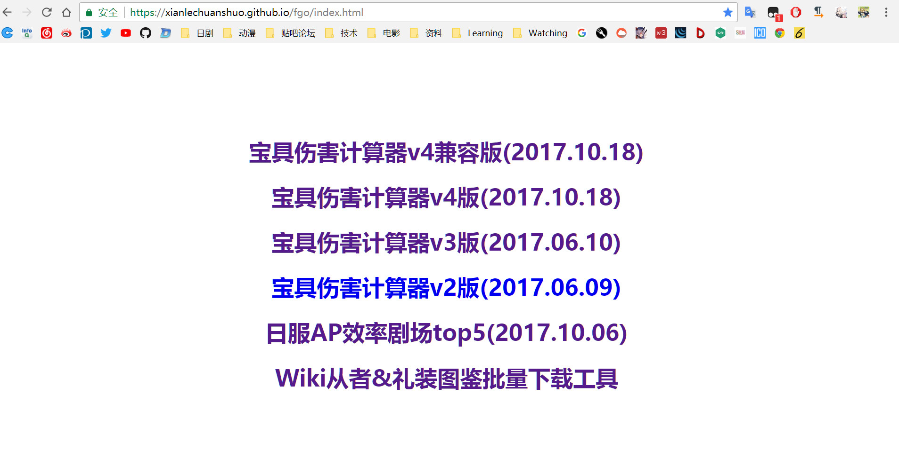
Q 楼主哪里可以查看计算公式？
A 在计算器页面导航条中的【FGO伤害计算公式】。
图片预览
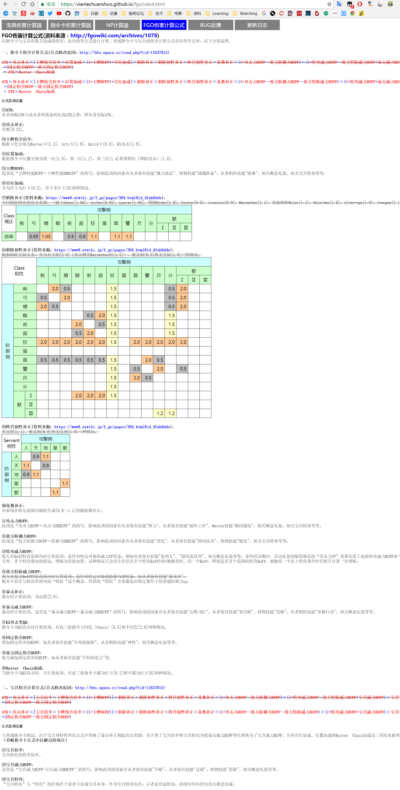
Q 特攻威力Buff是宝具特攻Buff吗？如果不是，怎么区分特攻威力和宝具特攻？
A1 不是。
A2 简单区分方法：看是否有持续回合数，比如杰克的女性特攻，是1回合的特攻，所以是特攻威力，又比如枪狐的男性特攻，没有持续回合，所以是宝具特攻，除了看是否有持续回合，还可以看倍率，小于或等于100%倍率的是特攻威力，大于100%倍率的是宝具特攻(活动倍卡礼装除外)。此外活动礼装的幅度极高的"攻击力UP"效果实质上是特攻威力(比如黄金相扑礼装)，死之艺术礼装的人形特攻也是特攻威力，还有终章中打魔神柱，羁绊Buff效果实质上也是特攻威力，以及武藏的第五势，这个比较特殊，计算指令卡伤害时当作特攻威力Buff计算(10级就是30%特攻威力Buff)，不参与宝具伤害计算。
图片预览
 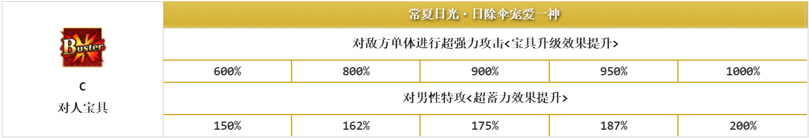
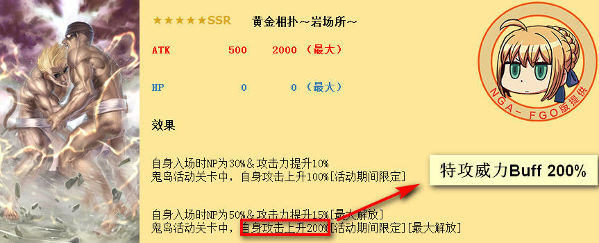
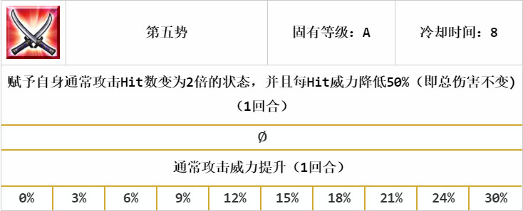
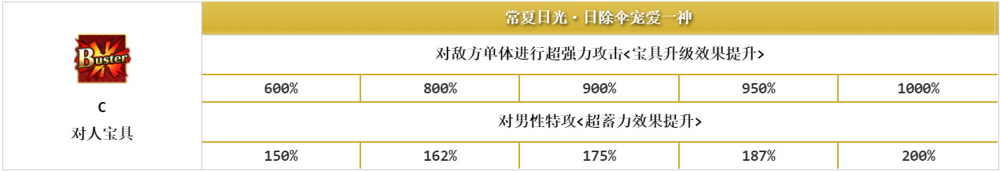
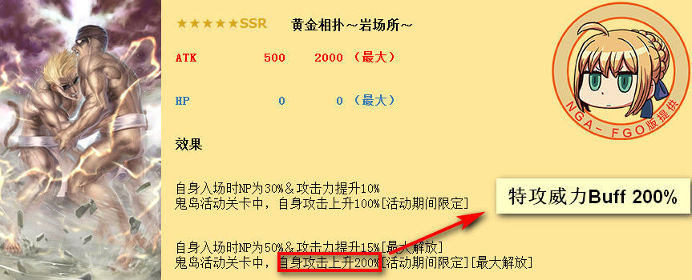
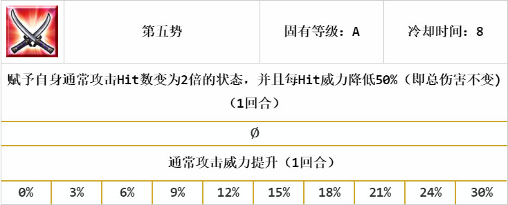
Q 宝具OC怎么设置？
A 跟OC相关的，请先勾选特攻，再选择OC等级。
图片预览
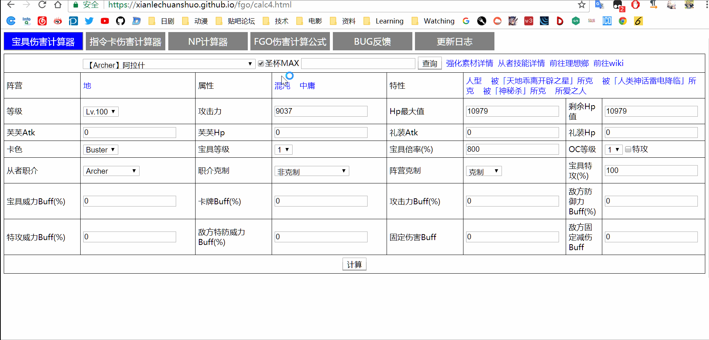
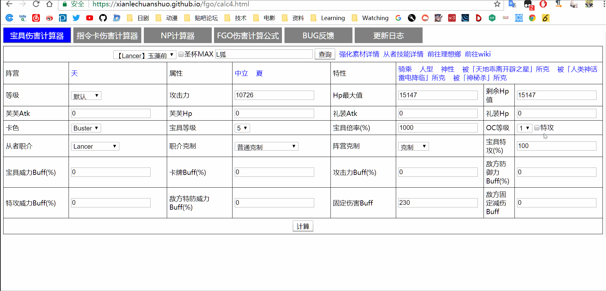
Q 有没有敌方目标信息设置？
A 没有。比如你想计算自爆弓炸枪阶狗粮的伤害，那只需要设置【职介克制】为【被克制】，【阵营克制】为【被克制】即可，【从者职介】不需要动，这个不是敌人的职介。如果【职介克制】、【阵营克制】不清楚的，建议还是去看看在计算器页面导航条中的【FGO伤害计算公式】。
图片预览

Q 哪些数据是要我们自己设置的？
A 技能Buff是要自己填的，不过从者的职阶技能(被动Buff)是自动加载的，不需要自己填，如果不清楚技能，可以点击【从者技能详情 】查看技能详情，旁边那个【强化素材详情 】可以查看从者突破所需素材以及技能升级所需素材。同时PC端双击图片可以直接下载图片。
图片预览
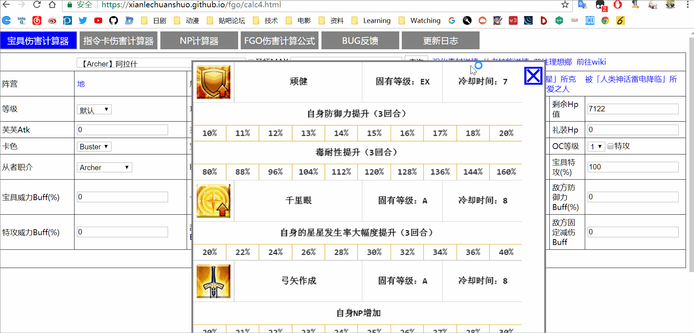
Q 查询从者名要打全吗？支持昵称查询吗？
A1 不用。比如我想搜"阿拉什"，只输入"阿拉"就能搜到。
A2 支持。比如我想搜"阿拉什"，输入"自爆弓"也能搜到，同时也支持模糊查询，不用打全昵称。如果某个从者想追加昵称，可以去我的帖子里回复。
图片预览
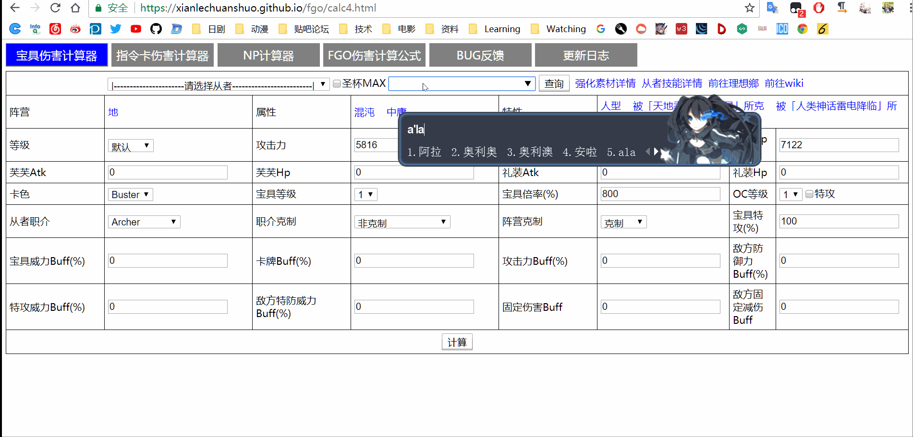
Q 支持阵营、属性、特性的查询吗？
A 支持。查询阵营，则关键词前加"@"；查询属性，则关键词前加"$"；查询特性，则关键词前加"#"。不需要刻意记，搜索框有自动完成功能，获得焦点后就会有提示信息，同时阵营、属性、特性那些关键词都可以点击的，点击了会自动去搜索相关内容。
图片预览
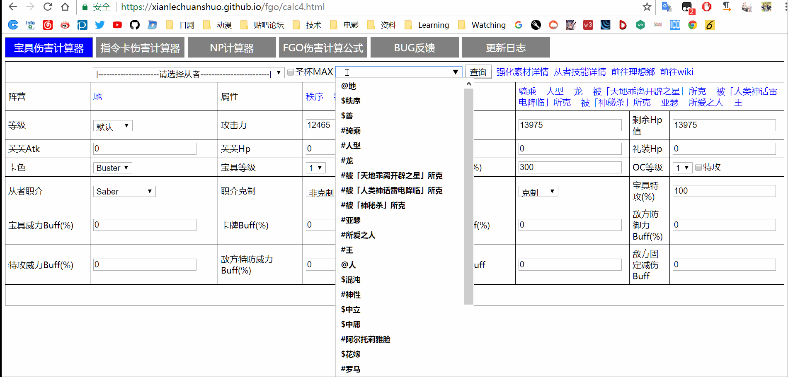
Q 为什么我的IOS手机端 Safari浏览器上访问v4兼容版，从者下拉列表是空的？
A emmmm，你先检查下你的Safari浏览器是不是开启了无痕模式，是的话关掉。